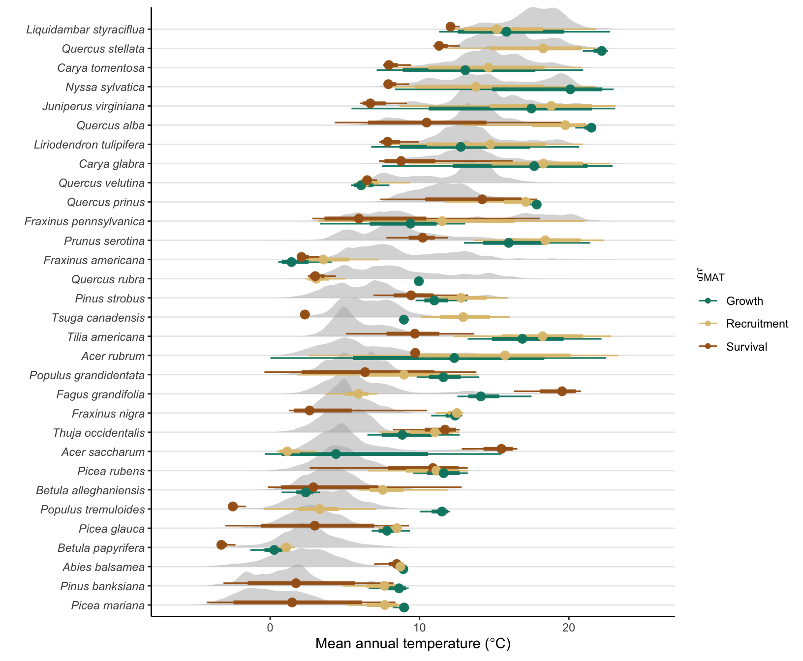
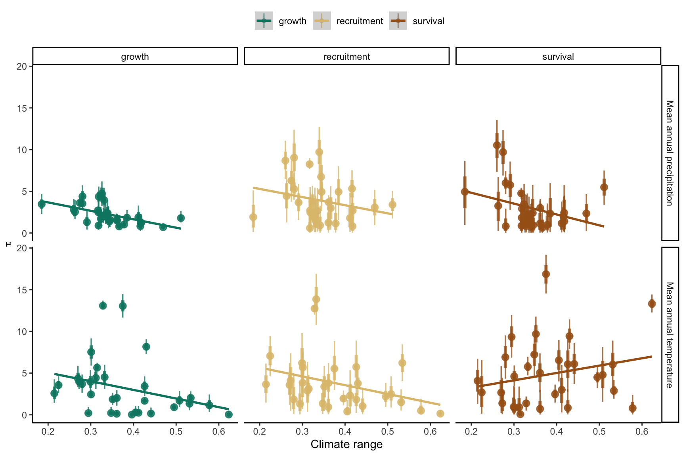
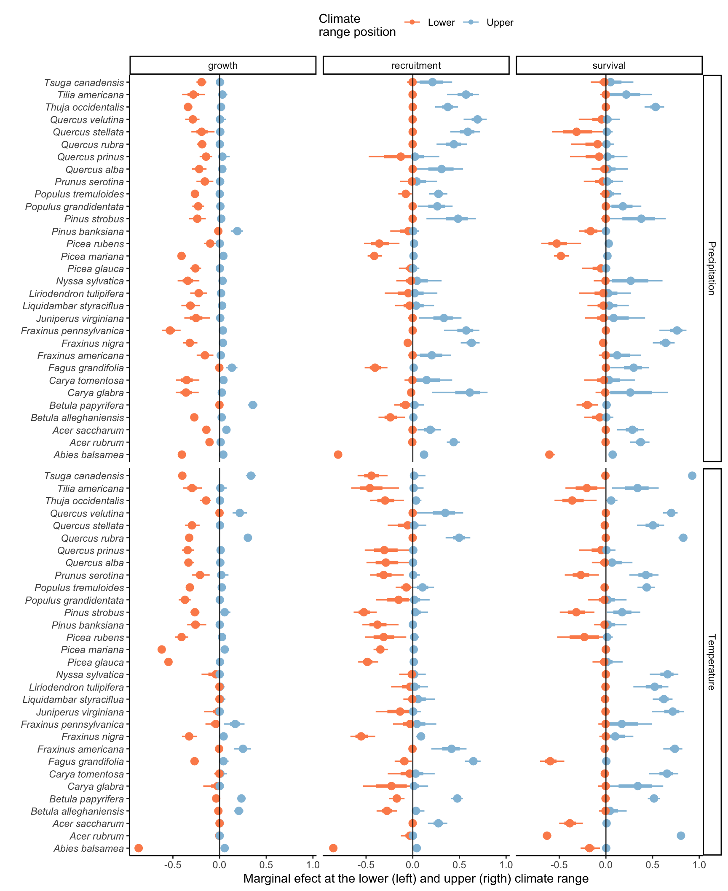

11 Climate effect
In this section, I discuss the effect of climate on growth, survival, and recruitment vital rates. We employ the bioclimatic variables of mean annual temperature (MAT) and mean annual precipitation (MAP), averaging these variables over the years, covering the time intervals spanning two measurement periods. The effect of these two variables on growth, survival, and recruitment is modeled using an unimodal function characterized by two key parameters: the optimal climate (\(\xi\)), representing the climatic conditions where growth and survival reach their peak, and the climate breadth (\(\sigma\)), which quantifies the rate of change in the climate’s impact as one moves away from this optimal point. In the fit process, we transformed the climate breadth parameters as \(\sigma = \tau^{-1}\) for sampling efficiency.
Optimal climate
Figure 11.1 and Figure 11.2 show the distribution of the optimal climate parameter, meaning the climate location where the vital rate is at its maximum, across the 31 tree species. The parameter mean and their uncertainty are displayed with the dot interval for growth (green), recruitment (yellow), and survival (brown). The density plot in light gray is the distribution of the climate variable among all observed trees across space and time.
Mean annual temperature

Mean annual precipitation
Optimal temperature vs temperature mid range
Optimal precipitaiton vs precipitation mid range
Climate breadth
The climate breadth is the second parameter to account for the climate effect on the growth, survival, and recruitment functions. We define climate breadth as the precision parameter, which is the inverse of the variance of the bell shape (\(\tau = \frac{1}{\sigma^2}\)). The closer this value is to zero, the higher is the breadth around the mean. In other words, when climate breadth is zero, the bell-shaped unimodal function becomes an almost flat line.
Climate breadth
Climate breadth vs observed climate range size
In Figure 11.7, we plot the climate range size of a species with its climate breadth.

Conditional effect at the lower and upper climate range
To have an integral understanding of the climate effect across the range of the species, we computed the effect size of each climate variable on each vital rate for both the minimum and maximum observed climate conditions. Effect size ranges from zero (no effect) to 1 (maximum negative effect). We defined each species’ minimum and maximum climate conditions separately using the 0.1 and 99% quantile probability distributions. In Figure 11.8, we changed the signal of the lower minimum condition to negative to better visualize both lower and upper ranges but consider the absolute value.
